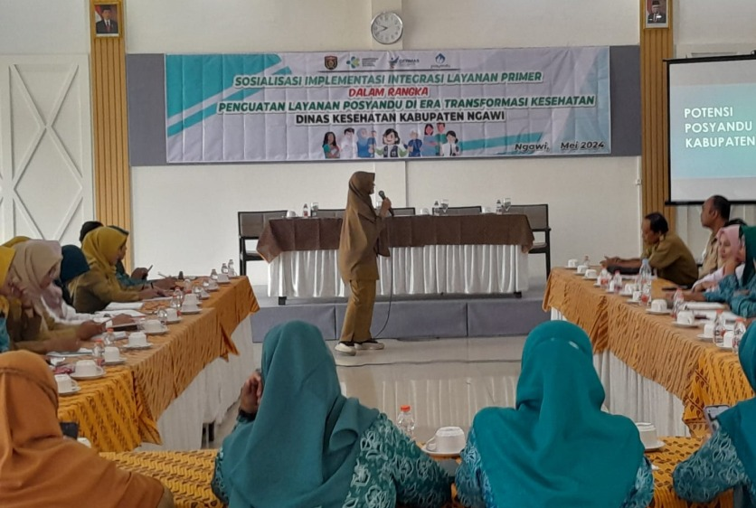
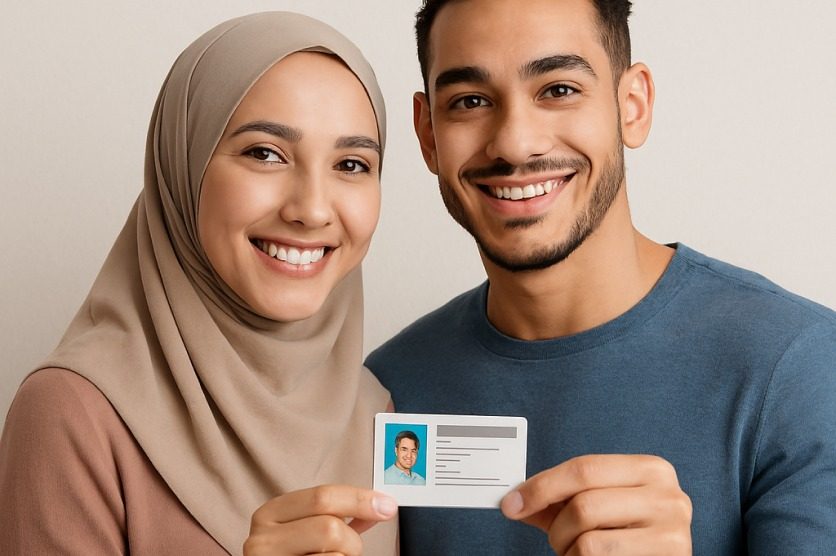
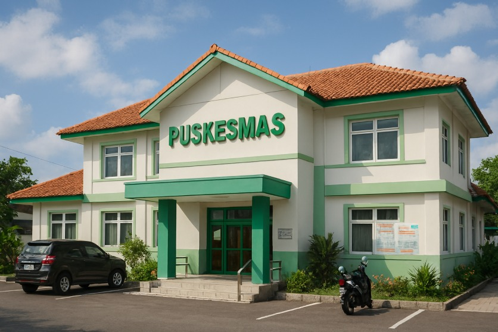

Tujuan Layanan
- Membantu keluarga menentukan perencanaan jumlah anak yang ideal.
- Mengurangi risiko kesehatan ibu dan anak.
- Meningkatkan kualitas hidup keluarga.

Jenis Konsultasi
- Konsultasi Tatap Muka Dilakukan di puskesmas, klinik, atau balai KB bersama tenaga medis.
- Konsultasi Kelompok Penyuluhan bersama di posyandu atau balai desa.

Manfaat Layanan
- Memahami pilihan metode kontrasepsi yang sesuai.
- Mendapat edukasi kesehatan reproduksi.
- Mendapat arahan dari tenaga medis.

Syarat & Alur Layanan
- Membawa KTP atau identitas lain.
- Mengisi formulir pendaftaran di loket atau secara online.
- Menentukan jadwal konsultasi.

Lokasi Layanan
- Puskesmas di seluruh wilayah Kota Tasikmalaya
- Klinik KB dan rumah sakit mitra.
Kontak Layanan
- 📞 Telepon: 0265-XXXXXXX
- 📧 Email: kbtasikmalayakota.go.id